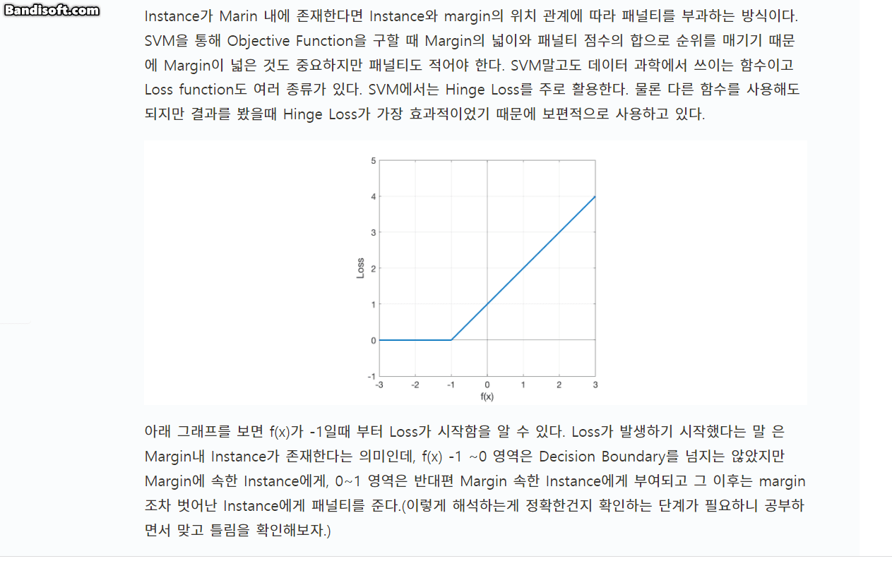
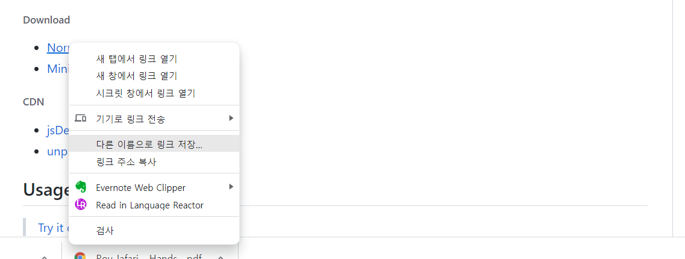

구현하고자 하는 기능

들어가기에 앞서
지금 이 블로그를 만들기까지 많은 시행착오를 겪었다. Hugo를 접하기 전만해도 HTML과 CSS에 대해 전혀 알지 못했기에 원하는 기능을 구현하기까지 상당히 많은 시간을 투자했다. 특히 Hugo 관련 한글 자료를 찾기 어려워 내가 원하는 기능을 어떤 방법으로 어떻게 구현해야하는지 이해하는데 오랜 시간이 걸렸다.
나와 비슷한 처지에서 놓인 분들에게 조금이나마 도움을 주기 위해 이 글을 작성했다. 나처럼 사전 지식없이 멘땅에 헤딩으로 Hugo 블로그를 개설중인 분들에게 이 글이 약간의 도움이라도 됐으면 좋겠다.
코드를 수정할 때
vscode를 사용했다.vscode를 사용하지 않는다면 이번 기회에 사용해보자.
설치 절차
1. medium-zoom.js 파일 다운로드
-
Normal → 마우스 우클릭 다른 이름으로 링크 저장 → 다운로드

2. medium-zoom.js 파일을 Static폴더로 이동
-
Static폴더는 홈페이지에 필요한 파일을 불러오기 위해 사용된다. js파일 외에도 css파일 image파일 등 필요한 파일들을 저장한 뒤 HTML 명령어 또는 Hugo 명령어를 통해 불러온다. -
다운로드 받은 파일을
D:\블로그 설치된 폴더\static\js에 붙여 넣는다. js 폴더가 없으면 폴더를 만든다.
내가 설치한 블로그 폴더명은
hugo_blog이다. 파일을 어디에 넣어야 할지 모르겠다면 아래 그림에 나와있는 경로를 보고 저장하자.
3. zoom_custom.js 생성
-
zoom_custom.js는medium-zoom.js을 실행하기 위한 명령어라고 이해하면 된다. -
medium-zoom.js파일 복사본을 만든 뒤 파일명을zoom_custom.js로 바꾼다. -
vscode에서zoom_custom.js를 열어 내용을 지우고 아래에 있는 코드를 붙여넣고 저장한다.mediumZoom('img', { margin: 0, /* The space outside the zoomed image */ scrollOffset: 40, /* The number of pixels to scroll to close the zoom */ container: null, /* The viewport to render the zoom in */ template: null, /* The template element to display on zoom */ background: 'rgba(0, 0, 0, 0.5)' /* 확대 중 배경색 조정*/ });
4. medium-zoom.js와 medium-zoom.js 불러오기
-
사용하고 있는 Theme이 있는 경우 Theme 폴더로 들어가 layouts 폴더에 있는
head.html을 복사하여D:\블로그 설치 폴더\layouts\partials에 붙여넣는다.
layouts 폴더에 partials 폴더가 없다면 만든다.

-
Theme 안에 있는 html 파일을 굳이 밖으로 끌고오는 이유는 hugo의 관습 때문이다. 현재 사용하고 있는 template 원본을 훼손하지 않기 위한 목적이기도 하고 제작자를 존중한다는 의미라기도 한다.
Theme과 블로그 설치 폴더 간 파일이 겹친다면 블로그 설치 폴더에 있는 파일을 우선순위로 불러온다.
-
vscode에서Head.html을 불러온 뒤 아래 코드를 맨 하단에 붙여넣는다.{{if .IsPage}} <!-- Single Page에만 작동하도록 설정하는 Hugo 명령어 --> <script defer language="javascript" type="text/javascript" src="{{ "/js/medium-zoom.js" | urlize | relURL }}"></script> <!-- 저장된 경로가 static/js/medium-zoom.js이 아니라면 src 경로를 수정해야한다. --> <script defer language="javascript" type="text/javascript" src="{{ "/js/zoom_custom.js" | urlize | relURL }}"></script> <!-- 저장된 경로가 static/js/zoom_custom.js이 아니라면 src 경로를 수정해야한다. --> {{end}}
5. 작동 여부 확인


✔️ 게시글에 사진 확대기능 추가하기_2